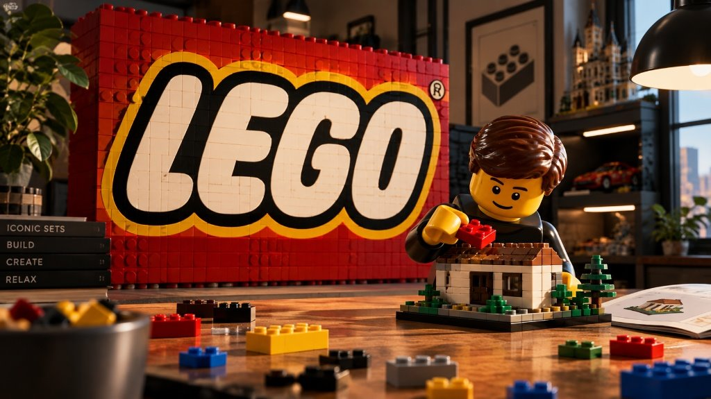

Reserva anticipada
Arquitectura 21065
Sagrada Família
La basílica de Gaudí en Barcelona a escala de colección, con su fachada y sus pináculos.
749,99 € precio de referencia
Ver en Tienda Oficial LEGO®Catálogo de colección para adultos
Dieciocho historias para construir con calma. Desde arquitectura y vehículos míticos hasta botánica y cultura pop. Te detallamos el número de piezas, edad, tiempo estimado de montaje y precio oficial de referencia de cada set, con absoluta transparencia y sin sorpresas.

Catálogo 2026
Destacados
El más grande de cada categoría. Si no sabes por dónde empezar, empieza por el que más te guste de la foto.
Reserva anticipada
Arquitectura 21065
La basílica de Gaudí en Barcelona a escala de colección, con su fachada y sus pináculos.
749,99 € precio de referencia
Ver en Tienda Oficial LEGO®
Disponible
Vehículos 42143
Ingeniería de precisión a escala 1:8, con caja de cambios secuencial de ocho velocidades, motor V12 de pistones móviles y puertas de mariposa.
449,99 € precio de referencia
Ver en Tienda Oficial LEGO®
Disponible
Cultura pop 75192
El modelo LEGO Star Wars más grande jamás creado, con detalles interiores minuciosos, armas láser y las tripulaciones clásica y moderna.
849,99 € precio de referencia
Ver en Tienda Oficial LEGO®
Disponible
Botánica 10281
Una pieza de exhibición relajante, con hojas verdes intercambiables o flores de cerezo rosadas compuestas por pequeñas ranas LEGO.
49,99 € precio de referencia
Ver en Tienda Oficial LEGO®
Disponible
Arte 31208
La xilografía japonesa reconstruida con capas de ladrillo, en tres dimensiones y con el zebrillo de la cresta hecho con piezas distintas.
99,99 € precio de referencia
Ver en Tienda Oficial LEGO®Catálogo
Los 18 sets están repartidos en cinco estilos. Estos son los cuatro más grandes; el resto, con filtros y ordenación, en su página.
Reserva anticipada
Arquitectura 21065
La basílica de Gaudí en Barcelona a escala de colección, con su fachada y sus pináculos.
749,99 € precio de referencia
Ver en Tienda Oficial LEGO®
Reserva anticipada
Arquitectura 21066
El horizonte de Manhattan a escala de colección, con sus edificios más reconocibles.
Precio pendiente sin confirmar
Ver en Tienda Oficial LEGO®
Reserva anticipada
Arquitectura 11383
Edificio de la serie de arquitectura para adultos.
109,99 € precio de referencia
Ver en Tienda Oficial LEGO®
Disponible
Vehículos 11381
El coupé deportivo inglés de los años sesenta, con su carrocería descapotable.
139,99 € precio de referencia
Ver en Tienda Oficial LEGO®18 sets
44.838 piezas
5 estilos
para adultos
precios sin sorpresas
filtros de verdad
Comunidad
Fotos de cracker que no son de cracker, y construcciones que no están en el catálogo. Si has montado algo y quieres que salga aquí, escríbenos.


Tiendas
Los precios que ves aquí son de referencia y pueden no coincidir con los de la tienda. Antes de venir, mira si el set sigue a la venta: el catálogo se actualiza cuando cambia la ficha oficial.
Calle de la Ejemplo 01 · 28001 Madrid
Avinguda de la Ejemplo 02 · 08001 Barcelona
Carrer de la Ejemplo 03 · 46001 València
Set
Modelo de bloques con perspectiva 3D calculada en CSS, sin WebGL.